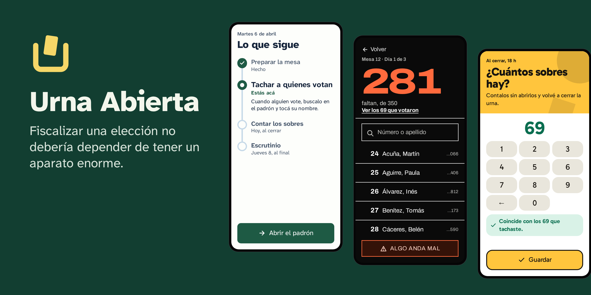
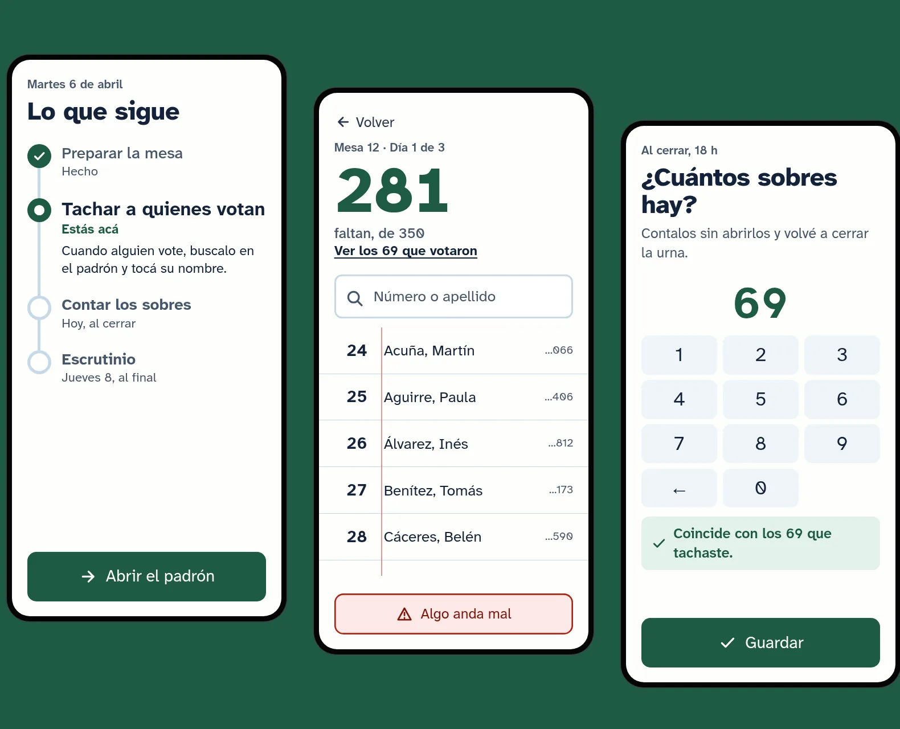
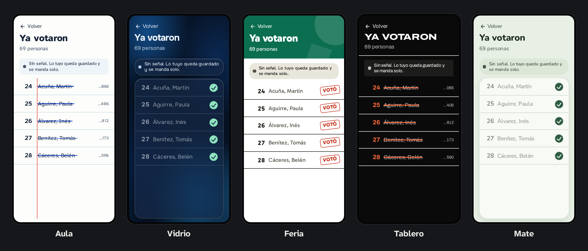

La app libre para organizar a tus fiscales
Tus datos en tu servidor. Funciona sin señal. La puede usar cualquiera, desde la primera vez.
Para Windows, macOS y Linux. Gratis. Está en desarrollo: su primera prueba real es en abril de 2027, así que antes de usarla hacé un simulacro.
Si tu padrón es un PDF o una foto, el lector de padrones lo convierte en tu computadora.

Urna Abierta
Fiscalizar una elección no debería depender de tener un aparato enorme.

Por qué existe
Una elección se gana también en las mesas: alguien tiene que estar ahí, saber quién votó, avisar si algo anda mal y cuidar el escrutinio hasta el final. Hoy, hacer eso bien exige una estructura que solo tienen los partidos grandes, y eso es una ventaja que no debería existir.
Hago Urna Abierta para que a una agrupación estudiantil o a un partido chico le alcance con una app gratuita, un servidor propio y un rato de configuración. Es un proyecto personal mío, y no pertenece a ningún partido.
Cada persona ve solo su trabajo
Sin menús: una pregunta por pantalla, un botón principal y un plan que te dice qué sigue.
Fiscal
Entra con un link, tacha a quienes votan aunque no haya señal, cuenta los sobres cada noche y carga el escrutinio.
Jefe de distrito
Ve primero las mesas que necesitan ayuda y llama a su fiscal con un toque.
Administración
Arma una vez el partido y el equipo, y crea una elección cada vez que hace falta.
Semáforo y estadísticas
Cada uno con su permiso. El semáforo marca a cada votante con las categorías y los colores que defina tu partido; las estadísticas muestran solo números, nunca nombres.
Lo que la hace distinta
Tus datos son tuyos
Cada partido usa su propio servidor. El proyecto no aloja nada ni recibe nada: no hay servidor central ni telemetría.
Anda sin señal
Muchas aulas no tienen conexión. Todo se guarda primero en el teléfono y se manda solo cuando vuelve.
Sin pagar servidor
Apunta a los planes gratuitos: se midió con 1 GB de memoria y un cuarto de procesador.
Lee tus padrones
Una planilla de Excel o CSV se carga directo. Un PDF o una foto pasan antes por el lector de padrones, que los lee en tu computadora sin mandárselos a nadie.
Con la ley en mente
Trae permisos, registro y herramientas para atender pedidos de personas y borrar los datos al terminar. Cumplir sigue siendo responsabilidad del partido.
Libre
Licencia AGPL. Podés leer el código, modificarlo y compartirlo.
El lector de padrones
Un programa aparte, para tu computadora. Convierte el padrón que te dieron en el archivo que carga la app.
Muchos padrones llegan como un PDF o una foto. El lector los lee en tu computadora, con un modelo de reconocimiento que viene adentro del programa: el padrón no sale de ahí y no hace falta internet. Lo que no quedó claro te lo muestra al lado de la imagen original, para que lo corrijas, y al final arma un archivo .padron para subir a Urna Abierta.
Elegís el padrón
Arrastrás el PDF o la foto a la ventana, que se abre en tu navegador.
Lo lee
Página por página, diciendo por cuál va y cuántas personas encontró. Se puede cancelar.
Revisás lo dudoso
Fila por fila, con la imagen arriba y los datos abajo. Lo que no revises queda pendiente para la app.
Lo subís a la app
Guardás el archivo
.padrony en Urna Abierta tocás «Subir el padrón».


Qué lee
PDF escaneados o con texto, con las columnas que nombre su encabezado, como «Apellido y nombre» y «DNI», y las mesas si las trae. También fotos. Una planilla no lo necesita: se sube directo en la app.
Privado
Corre solo en tu computadora, sin cuenta. Guarda la copia del PDF en una carpeta que solo vos podés abrir, y la borra al cerrarse.
Sirve solo
El archivo que arma sigue un formato abierto y de dominio público: lo puede usar cualquier otra herramienta, sin Urna Abierta.
Para Windows, macOS y Linux, gratis y con licencia AGPL. Si todavía no hay una versión para bajar, se usa desde una terminal: el README explica cómo.
Con la cara que quieras
Cinco temas, en claro y en oscuro. Se eligen con vista previa al instalarla, y cada persona lo puede cambiar en su teléfono. También podés hacer el tuyo. Tocá uno y mirá cómo cambia esta página.
Mesa 12 · faltan 3 de 5
- 24Acuña, Martín…066
- 25Aguirre, Paula…406
- 26Álvarez, Inés…812
- 27Benítez, Tomás…173
- 28Cáceres, Belén…590

Se instala en tres preguntas
Dónde va a vivir
Puede crear un servidor en Oracle, AWS o Google con tu cuenta, instalarla en uno que ya tengas, darte un texto para pegar o dejarla de prueba en tu computadora.
Cómo leer los padrones
En tu computadora, con el lector de padrones, que es lo recomendado porque un padrón trae datos de personas.
Cómo se ve
Elegís el tema mirándolo. Al terminar, te da la dirección y una llave para tus copias de seguridad.
Qué bajar
El instalador
Instala Urna Abierta en tu servidor. Es lo único que hace falta para empezar.
Bajar el instaladorEl lector de padrones
Solo si tu padrón es un PDF o una foto: lo lee en tu computadora, sin mandarlo a ningún lado, y arma el archivo para la app. Más sobre el lector.
Bajar el lectorDónde puede vivir
| Proveedor | Costo | A tener en cuenta |
|---|---|---|
| Oracle Cloud | Gratis y sin plazo | Puede recuperar instancias inactivas, y a veces no hay capacidad |
| AWS | Gratis hasta 6 meses | Alcanza para una elección. Después la cuenta se cierra |
| Google Cloud | Unos USD 3,65 por mes | La máquina es gratis, y se paga la dirección IP |
Estos planes cambian seguido: confirmalo en la página de cada proveedor. Hay una guía paso a paso.
El instalador puede estar sin firmar, así que tu computadora te va a avisar. Bajalo solamente de la página de releases y comprobá su SHA-256. La guía de instalación explica cada aviso.
Quién responde por los datos
Tu partido. Vos instalás, vos administrás y vos decidís qué se carga. El proyecto no ve nada: no tiene cómo. Antes de usarla, leé la información legal.